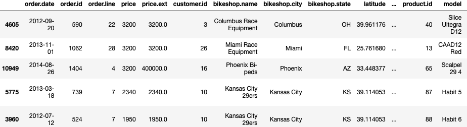
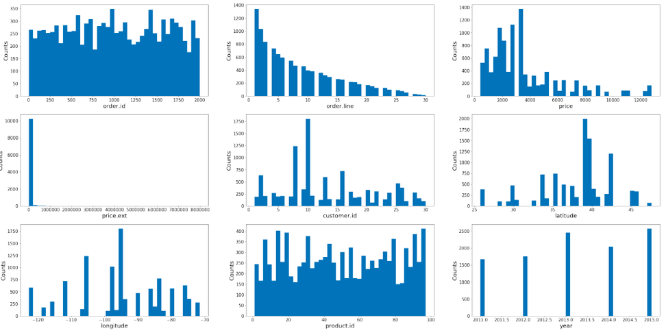
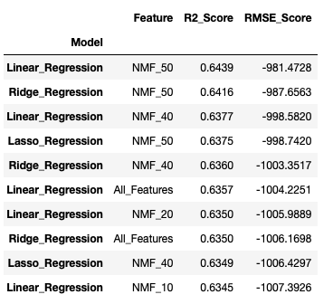

Overview
Helmet Headz would like to incorporate predictive analytics into their inventory management system in an attempt to optimize the amount of inventory stored in their warehouse. Having products sit in a warehouse for months on end increases costs to the company. It is far more effective to purchase more of the bike models that will sell faster and thus sit for less time in a warehouse. Also, if Helmet Headz has the correct amount of inventory in their warehouse, they can ship bikes to customers at a faster rate rather than having to backorder the product from the manufacturer. Correctly stocking bikes in the warehouse is undoubtedly a big advantage when competing against big box stores like Amazon and Dick’s Sporting Goods.
Hypothesis
My hypothesis is that I can successfully predict the amount of bikes that will be sold in the future by Helmet Headz. By using the bike sales data set from Helmet Headz sales database, I will evaluate various data modeling techniques for the possible Helmet Headz projected sales volumes. If Helmet Headz has the ability to enter a bike model into the predictive data model identifying how many bikes are expected to sell before purchasing, this can save franchise owners a large amount of money and keep them competitive.
The Data
 Sample images from the datatset I will be using to train my model.For this project, I will be examining a dataset containing the fictional bicycle orders spanning 2011 through 2015. he unit price and model names come from data provided by model for the bicycle manufacturer, Cannondale (2016). The customers (bicycle shops) including name, location, etc and the orders including quantity purchased and order dates are fictional.
 Bike sales by state.
Bike sales by state.
Method
This is a supervised learning problem; the dataset contains sales volumes for the from 2011 to 2016. I will create a model that will be able to provide analytical guidance for the franchise owners based on the historical sales trends for each bike. To solve this business problem, I am going to leverage linear regression. Specifically, I will be putting my data through three different types of linear regression; Standard Linear Regression, Ridge Regression and Lasso Regression, in order to determine which modeling technique fits my data the best. I will perform k-fold cross validation for each model which takes a random sample of the data ensuring the best model is chosen for each feature set. My target variable will be quantity sold and my feature set will be the remaining variables from the data set. Although, some variables are removed in the feature reduction steps highlighted below.
In the beginning of this project, I went through various methods of exploring my data to get a better understanding of what was contained in the data set and ensured there were no errors. I then reviewed each variable to ensure there were no outliers and confirmed all of the data should be included in my future modeling. Also, to ensure I was not guilty of data snooping or identified false correlations in my data, I split my data into a test and training sets.
 Numerical variable distributionsI then created histograms of all my numerical variables to understand how they were distributed and if the data could provide me any trends or interesting information. There were some interesting observations right out of the gate based on these histograms and allowed me to identify some fascinating trends. In addition to the numerical variables, I took a look at the categorical variables to determine how many unique values they contained and which had a small number that would allow for informative analysis. Categorical variables with too many unique values are not as useful for modeling.
In order to run the most effective models, I performed various types of dimensionality and feature reduction of my training data set. First, I removed unnecessary columns based on my analysis from step one. After reviewing the data, correlations and relationships I determined that order.id, order.line, customer.id, latitude, longitude, order.date and model were not required in my data set. These variables do not give me any useful data or were redundant fields based on data from other variables (i.e. latitude and longitude are repetitive columns because I have collected city and state already in my data set).
To ensure my categorical variables would be able to be used in my linear regression modeling, I transformed them via one hot encoding. This one hot encoding massively enlarged my data set from 21 columns to 117 columns. This many columns makes my data set an ideal candidate for feature reduction to see if I could remove any redundancy/noise and allow for the modeling time to speed up. I performed multiple feature reduction strategies including Principal Component Analysis (PCA), Matrix Factorization, and Thresholding Numerical Feature Variance. For PCA, first I standardized the features so that they have the properties of a standard normal distribution with a mean of zero and a standard deviation of one. I then created the PCA with the n_components to 99% so that the variance of the original features would be retained. Whiten is set to true which transforms the values of each principal component so they have a zero mean and unit variance. I then ran the standardized features through the PCA to identify how many features I can reduce my data set by. The PCA stated I could reduce my features by a whopping 72!
The next dimensionality reduction strategy I chose to implement was the Matrix Factorization method. Matrix Factorization creates, fits and applies non-negative matrix factorization(NMF) to reduce the dimensionality of features.Since the best NMF results achieved are through trial and error, I wanted to test out multiple different types of NMF. I created multiple feature reduction sets with n_components set to 50,40,20,10 and 5. The final feature reduction strategy I tested was Thresholding Numerical Feature Variance. This strategy removed the features with a low variance, i.e. likely containing little information and thus causing unwanted noise in your modeling. I created a variance threshold of 0.5. The variance threshold calculates the variance for each feature, and drops any feature that does not have a threshold greater than 0.5.
Once the data was collected, inspected, and perfected, I ran my data through seven different regression algorithms to predict MLB players expected fantasy points for the upcoming season. I chose to use regression algorithms to solve this problem because this is a supervised machine learning problem (I know the values of the output and can compare the model against the actual values) and I wanted to predict a continuous variable based on the data fed into my model. The seven models I chose to run my data through include:
 Results from my various bike sales modelsResults
I chose to go with a multiple linear regression model to predict the quantity of bike models that will be sold in the future. "Linear models make a prediction using a linear function of the input features". As mentioned above, I chose to run my features through 3 different types of linear regression; Standard Linear Regression, Ridge Linear Regression and Lasso Linear regression. The two metrics I used to evaluate my models are R2 and mean square error (MSE). R2, or the coefficient of determination, is how much variance in the target variable that is explained by our model1. MSE is a measurement of the squared sum of all distances between predicted and true values. The higher the value of MSE, the greater the total squared error, and thus the worse the model.
Conclusion
After running all the feature sets through all three models, I determined my best model would be the standard linear regression model with the NMF 50 feature set based on the best R2 and RMSE scores. I then ran the test data through the model and calculated the R2 score to be 0.7. This indicates that 71% of the variance in the quantity of bike models sold can be determined by the features used in the linear regression model. This does not mean the model will predict down to the exact bike how many will be sold. However, a high R2 value like 0.71 indicates this will be able to provide us with an accurate estimate that the franchise owners can use when purchasing inventory for their warehouses.
In the future, I would like to improve this model by incorporating more data and potentially weighing more recent data higher than data from 2011. Customer shopping trends change quickly, and data from 2011 may not be as helpful as data from six months ago. I would like to look at additional data points like marketing and sales promotions to improve the R2 and RMSE scores for this model and provide better predictions.

Citations
1 Boyle, T. (2020, February 7). Linear Regression Models in Python | Towards Data Science. Retrieved November 10, 2020, from https://towardsdatascience.com/linear-regression-models-4a3d14b8d368
2 Albon, C. (2018). Machine Learning with Python Cookbook: Practical Solutions from Preprocessing to Deep Learning(1st ed.). Sebastopol, CA: O’Reilly Media.